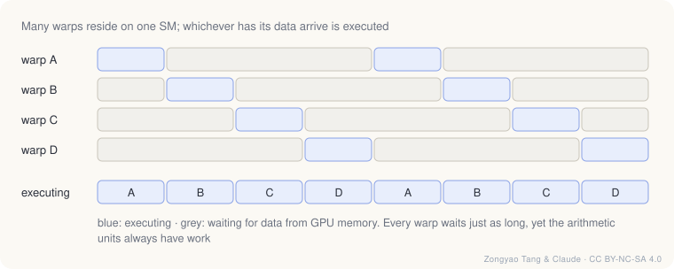
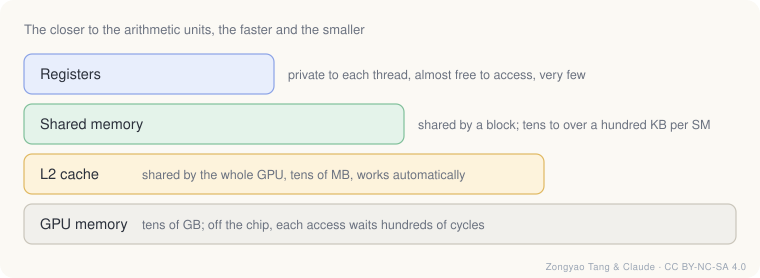

Once you can write a kernel, the next question is: why is it not fast enough? The answer is in the hardware. The thread: threads run on the hardware in groups of 32 (warps) → the GPU hides the time spent waiting for data by switching between warps → but data sits at different distances from the compute units → measure a kernel by "how many operations per byte moved" → tiling is the first move for raising that ratio.
Part 3 · The GPU and the CUDA execution model3.3 Compute and memory architecture
Translated by AI (Anthropic's Claude) from the Chinese edition. The Chinese original is the reference.
This unit answersWhat does GPU hardware look like? Why is "moving data" often more expensive than "computing"?
Follows 3.2: you can start threads; now see how those threads run on the hardware and where their data comes from.
- Warps: 32 threads following the same command
- The GPU does not avoid waiting; it fills the waiting with other work
- The closer storage is to the computation, the faster it is, and the smaller
- Arithmetic intensity: how many operations per byte moved
- Tiling: move one small block into shared memory at a time, and let everyone reuse it
Explanation
1Warps: 32 threads following the same command
Once a block is assigned to an SM, it is cut into warps of 32 threads each. The 32 threads of a warp execute the same instruction at the same moment, on different data. The warp is the unit the GPU really schedules.
The heart of a GPU is a number of SMs (streaming multiprocessors), and each block is assigned as a whole to one SM.
An SM does not give every thread its own control circuitry. It divides a block's threads by number into groups of 32, each called a warp: threads 0–31 are the first warp, 32–63 the second, and so on. A warp shares one control unit that fetches and decodes instructions, so its 32 threads execute the same instruction at the same moment, each on its own data.
This is the design idea of 3.1 made concrete: 32 threads share one set of control logic, and the area saved goes to arithmetic.
Two direct consequences follow. First, make block sizes multiples of 32: with 40 threads in a block, the second warp has only 8 threads working and 24 places empty, yet the hardware spends time on it all the same. Second, think about a kernel's performance warp by warp: the more alike the work of a warp's 32 threads, and the closer together the data they access, the more efficient it is. Coalesced memory access and branch divergence, later, both unfold from this sentence.
An analogyLike a drill squad: the instructor gives one command, and a row of 32 people do the same movement at once.
So make block sizes multiples of 32, so no half-rows are wasted; if someone in a warp has to do a different movement, it can only be done in turns (branch divergence, 3.4).
Used later in The GPU does not avoid waiting; it fills the waiting with other workCoalesced memory access: a warp's 32 reads are best merged into oneBranch divergence: a warp taking two paths has to run twiceSourcesPMPP §4.4- 2.1 said a single GPU thread is slow and waits a long time for data, yet the GPU's total throughput is very high. How does it keep from being dragged down by waiting?
2The GPU does not avoid waiting; it fills the waiting with other work
Reading GPU memory once takes several hundred clock cycles. The CPU uses large caches to wait less; the GPU's way is to keep many warps resident on an SM at once, and when one warp is waiting for data, the scheduler switches, at zero cost, to another warp that is ready. As long as there are enough on standby, the compute units always have work.
After a warp issues a read from GPU memory, it waits several hundred clock cycles for the data to come back. Meanwhile it can do nothing.
A CPU deals with this through large caches that make it likely the data is already at hand. The GPU's way is different: an SM keeps many warps resident at once, far more than it can actually execute at any moment. Each cycle, the scheduler picks one of the warps that "have their data and can go on" and executes it. A warp waiting for data? Execute another one first. And switching between warps needs no saving and restoring of state, so it costs nothing extra.

Four warps taking turns on the arithmetic units So for a single warp the latency is not reduced at all; but for the SM, the arithmetic units have work almost every cycle. This is "hiding latency", and it is exactly why the GPU dares to keep its caches small and give the area to arithmetic units.
It works only if there are enough warps on standby. How many warps an SM can keep resident is limited by its resources: its total number of registers is fixed, and so is its total shared memory. If your kernel uses many registers per thread, or a large amount of shared memory per block, fewer warps fit on the SM. The ratio of resident warps to the maximum is called occupancy. With low occupancy there are not enough on standby, and the arithmetic units idle.
An analogyLike a waiter in a restaurant: they do not stand by one table waiting for its food to come out of the kitchen, but go and take orders and serve other tables. The more tables, the less the waiter stands idle.
So enough threads must be resident at once (occupancy). The more registers each thread uses and the more shared memory each block uses, the fewer warps can be resident at once, and the weaker the ability to hide latency.
Used later in More threads is not always better: sometimes one thread should do several sharesCompute this piece while moving the nextGradient buckets: communicating while the backward pass runsSourcesPMPP §4.6PMPP §4.7- Hiding latency only keeps waiting from being wasted; it does not make data arrive faster. To really wait less, look at where data is kept: storage in different places differs greatly in speed.
3The closer storage is to the computation, the faster it is, and the smaller
Registers (private to each thread) → shared memory (shared within a block, on chip) → L2 cache → GPU memory (global memory, large but slow). The further out, the larger and the slower.
From closest to the arithmetic units to furthest:
- Registers: private to each thread, almost free to access, but few. A kernel's local variables live here.
- Shared memory: on the chip, shared by a block's threads, only tens to a little over a hundred KB per SM. More than an order of magnitude faster to access than GPU memory.
- L2 cache: shared by the whole GPU, tens of MB, works automatically and cannot be controlled directly by the program.
- GPU memory (global memory): tens of GB; all data ends up here, but it is off the chip, and every access passes through that wait of hundreds of cycles.
The rule is simple: the closer, the faster, and the smaller.

Four levels of storage, from near to far This hierarchy gives the overall direction of performance work. A naive kernel usually goes to GPU memory for every operation, like making a trip to a distant warehouse for every single item. The better way: move a batch of data from GPU memory into shared memory or registers at once, use it again and again close by, and write the results back to GPU memory in one go when done. The next two cards turn this idea into a measurable quantity and a concrete method.
An analogyLike cooking: the spoon in your hand is a register, the spice rack by the stove shared memory, the kitchen fridge the L2, the supermarket downstairs GPU memory.
So the core routine of a high-performance kernel is: move data that will be used repeatedly somewhere close, use it many times there, and only then write it back.
Used later in Arithmetic intensity: how many operations per byte movedTiling: move one small block into shared memory at a time, and let everyone reuse itCoalesced memory access: a warp's 32 reads are best merged into oneSourcesPMPP §5.2- "Use it many times close by" is a direction, but how do you measure whether a kernel does it well? You need a number.
4Arithmetic intensity: how many operations per byte moved
Arithmetic intensity = the number of floating-point operations ÷ the bytes moved from GPU memory (FLOP/B). A naive matrix multiplication does one multiply-add for every two 4-byte numbers read, about 0.25 FLOP/B; using all of a GPU's compute often needs a dozen FLOP/B or more, and with Tensor Cores over a hundred.
The definition of arithmetic intensity: for every byte moved from GPU memory, how many floating-point operations are done (FLOP/B).
Take naive matrix multiplication. The innermost loop is
sum += A[i][k] * B[k][j]: read two floats (8 bytes in all), do one multiplication and one addition (2 operations). Arithmetic intensity = 2 ÷ 8 = 0.25 FLOP/B.Now see what the hardware offers. Suppose a GPU has 1000 GB/s of memory bandwidth and a peak compute of 20 TFLOPS (2×10¹³ operations per second). At an intensity of 0.25 FLOP/B, even with the bandwidth fully used it can support only 1000×10⁹ × 0.25 = 2.5×10¹¹ operations per second, a little over 1% of peak compute. In other words, while this kernel runs, 99% of the compute sits idle waiting for data.
To use all of this GPU's compute, arithmetic intensity has to reach 2×10¹³ ÷ 10¹² = 20 FLOP/B, 80 times the naive implementation.
This number answers how to tell compute from bandwidth among the "three walls" of 3.1: arithmetic intensity far below the hardware's "compute ÷ bandwidth" means bandwidth-bound. It also points to the only way to improve: the number of operations the algorithm needs is fixed, so the only thing that can shrink is the bytes moved, that is, using each piece of data that was moved many times.
An analogyLike a chef and a kitchen porter: the chef can cook ten dishes a minute, the porter brings the ingredients for only one dish a minute, and the chef spends most of the time waiting.
So most naive kernels are bandwidth-bound: however fast the compute units, they cannot be fed. Raising arithmetic intensity (reusing data) matters more than optimising the computation itself.
Builds on A program is slow for only three reasons: compute, bandwidth, overheadThe closer storage is to the computation, the faster it is, and the smallerUsed later in Tiling: move one small block into shared memory at a time, and let everyone reuse itThe roofline: first see which wall you are hittingAlmost all of a Transformer's arithmetic is in matrix multiplications, but not all of its timeWhen generating one word, matrix multiplication degenerates into matrix times vectorSourcesPMPP chapter 5- How do you get the data you moved used many times? Matrix multiplication offers exactly this chance: the same element is used by many outputs.
5Tiling: move one small block into shared memory at a time, and let everyone reuse it
In a matrix multiplication the same element is used by many threads. Tiling has a block's threads cooperate: first move small blocks of A and B into shared memory, then each reads from shared memory again and again. With tiles of width T, accesses to GPU memory drop to about 1/T of what they were.
When computing C = A × B, row i of A is multiplied with every column of B, so each element of A is used by n different outputs. In a naive implementation, the n threads responsible for those n outputs each read it from GPU memory, n reads in all.
Tiling has a block's threads cooperate. Divide the matrices into small T×T tiles; one block is responsible for one tile of C. In each round:
- Each thread reads one element of A and one of B from GPU memory and puts them in shared memory. Together, the whole block has moved in exactly one tile of A and one tile of B.
__syncthreads(): wait until everyone has finished moving.- Each thread reads the T pairs of numbers it needs from shared memory and does T multiply-adds.
Do the sum: each thread reads only 2 numbers from GPU memory per round, yet does T multiply-adds; before, every multiply-add needed 2 numbers read from GPU memory. Accesses to GPU memory drop to 1/T, and arithmetic intensity rises T times. With T = 16, from 0.25 to 4 FLOP/B.
Then why not make T very large? There are two limits: the tiles must fit in shared memory; and the more shared memory is taken, the fewer warps can be resident on the SM, and the weaker the ability to hide latency (occupancy, above). So T is usually 16 or 32; going further relies on the multiple levels of tiling in 4.5.
Code: the skeleton of a tiled matrix multiplication kernel
Below is a version for n×n matrices with tile width T = 16 (to bring out the structure, assume n is a multiple of T). A block is T×T threads and is responsible for one tile of C.
#define T 16 __global__ void matmul_tiled(float* A, float* B, float* C, int n) { __shared__ float As[T][T], Bs[T][T]; // two tiles, in shared memory int row = blockIdx.y * T + threadIdx.y; // this thread is responsible for C[row][col] int col = blockIdx.x * T + threadIdx.x; float sum = 0; // accumulated in a register for (int t = 0; t < n / T; t++) { // move along this row / this column, one tile at a time // ① move together: each thread moves one element of A and one of B As[threadIdx.y][threadIdx.x] = A[row * n + (t * T + threadIdx.x)]; Bs[threadIdx.y][threadIdx.x] = B[(t * T + threadIdx.y) * n + col]; __syncthreads(); // ② wait until everyone has moved theirs for (int k = 0; k < T; k++) // ③ read only shared memory, do T multiply-adds sum += As[threadIdx.y][k] * Bs[k][threadIdx.x]; __syncthreads(); // ④ wait until everyone has computed before overwriting shared memory } C[row * n + col] = sum; // write GPU memory only once, at the end }Compare the four numbered marks with the card: in ① each thread reads only 2 numbers from GPU memory; in ③ it does T multiply-adds, all from shared memory. Neither
__syncthreads()can be dropped: without ②, some threads would read data others have not yet moved in; without ④, some threads would still be using the old data when the next round overwrites it.Note the memory accesses in ① too: when
threadIdx.xincreases by 1, the addresses in A and B both increase by only 1, so both reads are coalesced (3.4 explains).An analogyLike car-sharing: rather than everyone driving to the supermarket separately to buy the same things, one person drives, buys a box, and puts it in the office for everyone to take from.
So tiling raises arithmetic intensity directly, the first step from "bandwidth-bound" towards "compute-bound"; the price is waiting with __syncthreads() until everyone has moved their data before computing, and tile size is limited by the capacity of shared memory.
Builds on Arithmetic intensity: how many operations per byte movedThe closer storage is to the computation, the faster it is, and the smallerUsed later in Triton lets you think in "blocks"Tiling + recomputation: compute a little more, move a lot lessTiling takes several levels: block, warp and thread each take a pieceSourcesPMPP §5.3
Putting it together
Because reading GPU memory is slow, the GPU fills the waiting with many warps taking turns; but however full it gets, a naive kernel does only 0.25 operations per byte moved, and the compute is simply not used; so move data that is used repeatedly somewhere close (shared memory) and use it many times. That is tiling.
Test yourself
Without looking back at the explanation, say it in your own words.
- What is a warp? Why are block sizes usually multiples of 32?
- How does the GPU hide memory latency? How does this relate to occupancy?
- What levels of storage does a GPU have? What characterises each?
- What is arithmetic intensity? What is the arithmetic intensity of naive matrix multiplication, and what does it tell you?
- Why does tiling reduce accesses to GPU memory? By how much?